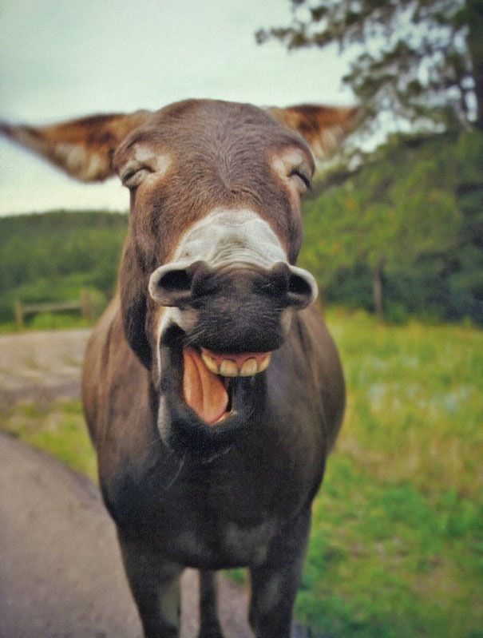

This is a donkey

Âne est le nom vernaculaire donné à certaines espèces de mammifères quadrupèdes ongulés de la famille des Équidés, plus petit que le cheval, à longues oreilles et à l'échine saillante. Le plus connu des ânes est l'âne domestique (Equus asinus), issu de la domestication de l'âne sauvage d'Afrique (Equus africanus), et à partir duquel de nombreuses races ont pu être sélectionnées.
TEST THE AUTO INDEX
TEST THE CGI
TEST UPLOADING A FILE
TEST DISPLAYING A HUGE IMAGE